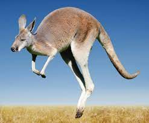
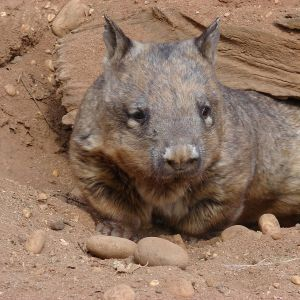
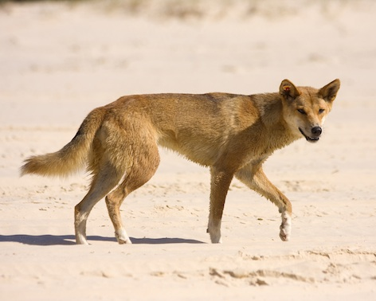
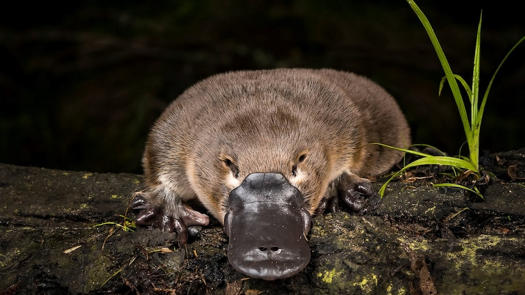
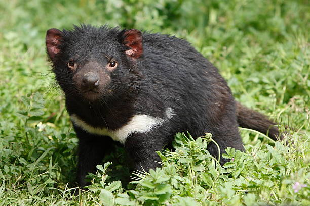
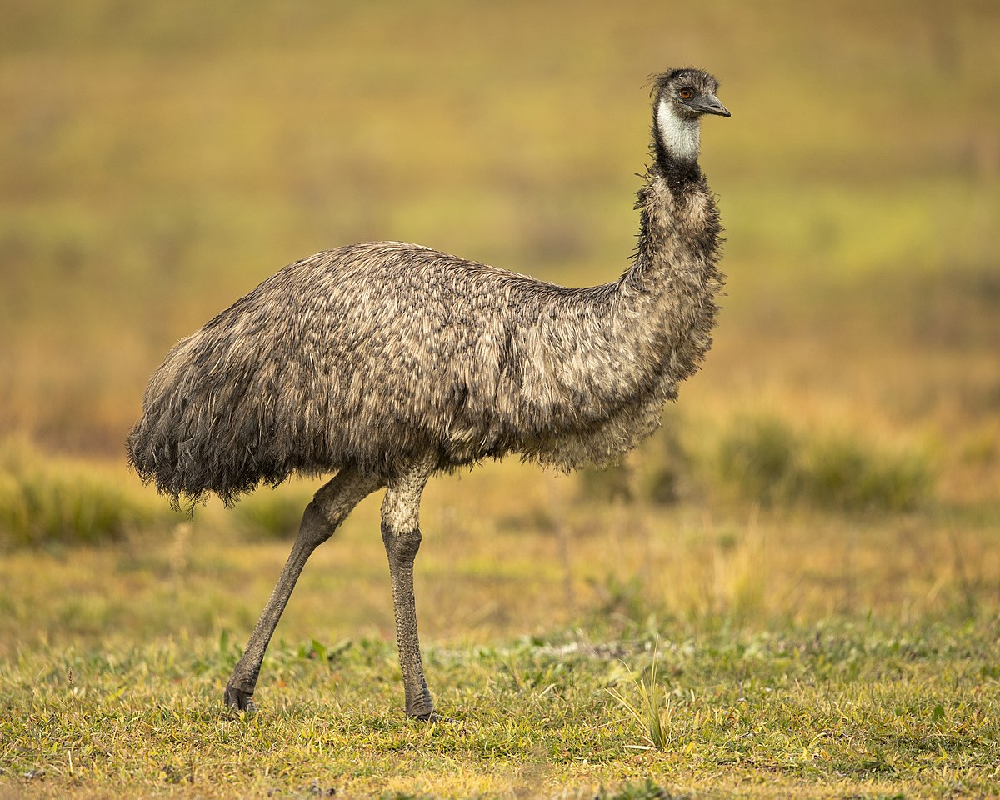
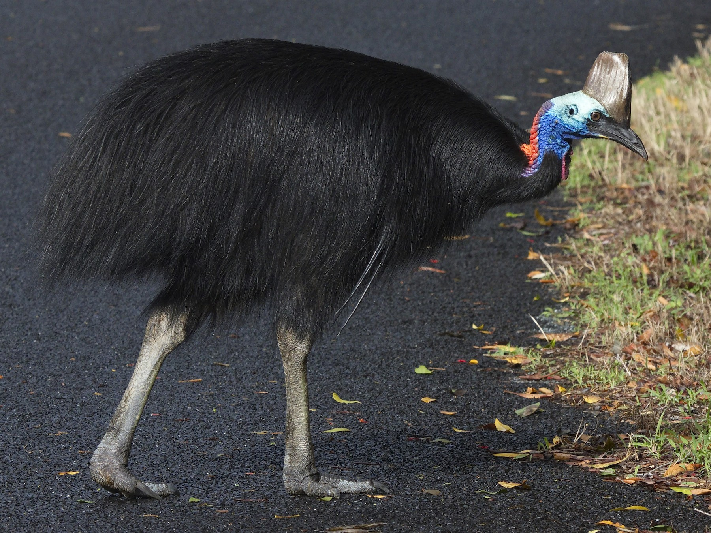
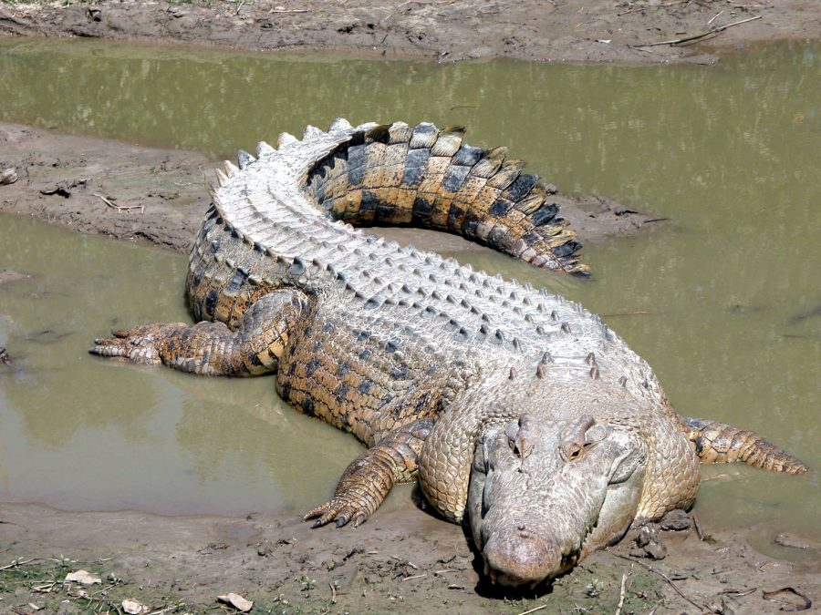
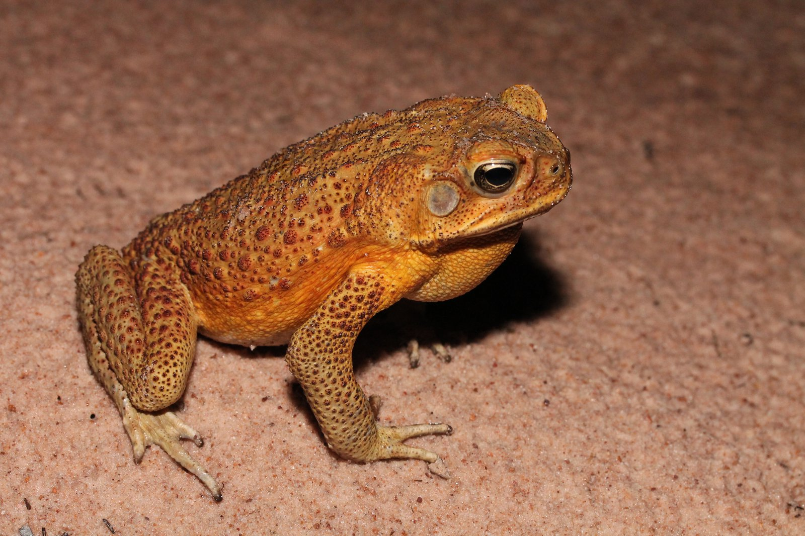
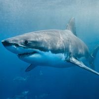

Australia boasts a huge range of unique and diverse animal species.
Nearly half of its birds, 69% of mammals are found only in Australia. Along with that, over 90% species
of amphibians and reptiles are endemic to Australia and can not be found anywhere else in the world.
It is the only country in the world to have platypus, kangaroos, koalas, wombats and
numbats.
The 4 major categories of fauna in Australia are:
Animal categories in Australia
-
Mammals
Australia is home to around 800 species of mammals and almost half of them are marsupials. Marsupials are born in a very early stage and are protected inside of a pouch. Australia is the only continent to have marsupials, monotremes (egg-laying mammals) and placental mammals (gain nourishment by a placenta before birth).
-
Koala
(Phascolarctos cinereus)
Koalas are marsupials. This means they carry their young ones in a pouch. Koalas live in eucalypt forests and can be found down the east coast of Australia. Some are also found in South Australia. They are lazy, sleeping for upto 20 hours everyday and eat only eucalyptus leaves. Sadly they are now considered vulnerable due to their decreasing populations.
-
Kangaroo
(Family- Macropodidae) Kangaroos are the worlds largest marsupials. There are 55 species of Kangaroos and Wallabies in Australia. Wallabies tend to be smaller than kangaroos. They can be found in bushlands in rural areas. Black Wallaroo- a species of kangaroos is Near Threatened with extincion. Rest all are widespread and common.
-
Wombat
(Family- Vombatidae) Koala's closest living relatives, Wombats are stout marsupials and characterised by their small size, short legs and stubby tails. They can adapt to a variety of habitats and can be found living in mountains, forests and shrublands. Wombats are herbivore and feed on grasses, shrubs and bushes. There are three species of Wombat in Australia; the bare-nosed wombat - not threatened, the southern hairy-nosed wombat - near threatened, and the northern hairy-nosed wombat - critically endangered.
-
Dingo
(Canis lupus dingo) Dingo is a native wild dog in Australia and its largest carnivorous mammal. They are the first placental mammals believed to be introduced in Australia around 3500 years ago. They are apex predators and play an important role in keeping ecosystem in balance. They are found across most of mainland Australia. They are listed as vulnerable to extinction.
-
Platypus
(Ornithorhynchus anatinus) Platypus is a monotreme which are egg-laying mammals. Males have spur on their hind foot that injects venom making it one of very few venomous mammals in the world. They have webbed feet, duck like bill, are beaver-tailed and have brown fur. They are expert swimmers and can be found in freshwater creeks and rivers. They are not endangered but they are considered 'Near Threatened'.
-
Tasmanian Devils
(Sarcophilus harrisii) Tasmanian Devils are the largest carnivorous marsupials in the world and have the most powerful bites. They were once found all over mainland Australia but the introduction of Dingo, led to their extincion on the mainland. They are now found in Tasmania. However, they are currently listed as endangered.
-
Koala
-
Birds
There are around 800 species of birds that can be found in Australia and about 45% of them are endemic. The size of these birds ranges from a few centimeters long to birds that can reach a height of 2 metres.
-
Emu
(Dromaius novaehollandia) Emus are the tallest bird in Australia reaching upto heights of 2m. They are flightless birds and can run as fast as 50kph. They are second largest birds in the world just after Ostriches. They are found over most of the mainland. Due to very few predators, they are a species of least concern.
-
Cassowary
(Casuarius casuarius johnsonii) Cassowary is the Australia's heaviest flightless bird weighing upto 76kg. It has black plumage and its neck it bright blue and purple. It also has a large horn on their neck known as casque. They play an important role in maintaining the environment by spreading seeds in great distances. They were once found through much of northern Queesland but now are found only in Wet Tropics and Cape York. This species is listed as endangered.
-
Emu
-
Amphibians and Reptiles
Around 200 speices of amphibians and 900 species of reptiles can be found in Australia. Out of these, 94% amphibians and 93% reptiles are endemic to Australia.
-
Saltwater Crocodile
(Crocodylus porosus) Saltwater Crocodile is the largest reptile in the world. Male crocodile can grow upto 6 m in length and weigh over 1000 kg. Females are smaller and around half the size of the male counterparts. They are believed to have existed since the prehistoric era and date as long as 200 million years ago. They are apex predators capable of killing any animal that enters its territory, including humans. Freshwater wetlands and floodplains are the most suitable habitat for them. In Australia, they can be found in Northern Territory, North Queensland and in Western Australia.
-
Cane Toad
(Rhinella marina) Cane toad is the largest toad in the world. It is a native species in South and Central America and was introduced in Australia in 1935 to deal with pest attacks on sugar cane. Since then, they have spread all the way from Queensland to Western Australia. They have serious impact on the ecosystem of the country. They have poisnous glands and are highly toxic to other animals. They are responisble for the declining populations of native species and also compete with them for food.
-
Saltwater Crocodile
-
Marine Animals
Over 5000 speices of fishes are found in Australia and 24% of these are endemic. Because Australia is a dry continent only 280 species of freshwater fishes are found here. Major diversity of saltwater fishes is found here.
-
Great White Shark
(Carcharodon carcharias) Great White Sharks are one of the largest shark species in the world. They can grow upto 7 m in length and weigh over 1900 kg. There are also numerous cases of shark attacks each year in Australia. Due to their continuous fishing and also them getting caught in the beach protection netting, they are considered vulnerable in Australia.
-
Great White Shark
Some other animals and their status (threatened, vulnerable, etc) according to IUCN Red List:
| Sr. No. | Animal Name | Scientific Name | Status |
|---|---|---|---|
| 1. | Tasmanian Tiger | Thylacinus cynocephalus | Extinct |
| 2. | Northern Quoll | Dasyurus hallucatus | Endangered |
| 3. | Quokka | Setonix brachyurus | Vulnerable |
| 4. | Dugong | Dugong dugon | Vulnerable |
| 5. | Numbat | Myrmecobius fasciatus | Endangered |
To know about the status of more animals, click here